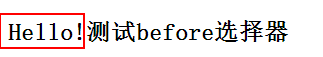

伪元素
W3C："W3C" 列指示出该属性在哪个 CSS 版本中定义（CSS1 还是 CSS2）。
| 属性 | 描述 | CSS |
|---|---|---|
| :first-letter | 向文本的第一个字母添加特殊样式。 | 1 |
| :first-line | 向文本的首行添加特殊样式。 | 1 |
| :before | 在元素之前添加内容。 | 2 |
| :after | 在元素之后添加内容。 | 2 |
1-:after,:before 【文字】

.a1:before{
content: 'Hello!'
}
2-:after,:before 【图片】
//用背景的形式

.a3:before{
content: '';
background-image: url('cloud.png');
background-size: 20px 20px;
display: inline-block;
width: 20px;
height: 20px;
}
CSS 选择器参考手册
| 选择器 | 描述 |
|---|---|
| [attribute] | 用于选取带有指定属性的元素。 |
| [attribute=value] | 用于选取带有指定属性和值的元素。 |
| [attribute~=value] | 用于选取属性值中包含指定词汇的元素。 |
| [attribute|=value] | 用于选取带有以指定值开头的属性值的元素，该值必须是整个单词。 |
| [attribute^=value] | 匹配属性值以指定值开头的每个元素。 |
| [attribute$=value] | 匹配属性值以指定值结尾的每个元素。 |
| [attribute*=value] | 匹配属性值中包含指定值的每个元素。 |
| 属性 | 描述 | CSS |
|---|---|---|
| :first-letter | 向文本的第一个字母添加特殊样式。 | 1 |
| :first-line | 向文本的首行添加特殊样式。 | 1 |
| :before | 在元素之前添加内容。 | 2 |
| :after | 在元素之后添加内容。 | 2 |